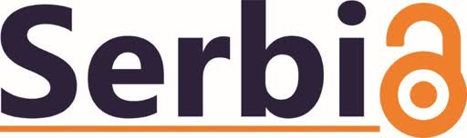

2025-09-12
Zadovoljstvo nam je da vas pozovemo na svečano pokretanje Srpske mreže za reproducibilnost istraživanja (RS-RN), koje će se održati u četvrtak 25. septembra 2025. godin e, u Naučno-tehnološkom parku Beograd , od 10:00 do 18:00 časova.…

2024-09-24
Beograd, 5. novembar 2024. Univerzitet u Beogradu organizuje Dan otvorene nauke V. Cilj konferencije je upoznavanje istraživača iz Srbije sa principima otvorene nauke i aktuelnim inicijativama i zahtevima u ovoj oblasti, posebno u…

2023-10-04
U okviru serije FAIR National Roadshow događaja koje organizuje projekat FAIR-Impact , 10. oktobra 2023. godine, od 11.00 do 13.00 časova, biće organizovan skup pod nazivom Research Assessment and Open Science practices in Serbia (…
2022-11-03
Beograd, 30. novembar – 1. decembar 2022. Projekat NI4OS-Europe – Nacionalne inicijative za otvorenu nauku u Evropi, organizuje radionicu o radu sa podacima i softverom otvorenog koda za otvorenu nauku (“Hands-on workshop: Touching on…

2022-08-01
Belgrade, 3-4 November 2022 University of Belgrade organizes Open Science Days IV with the aim of informing the local research community about Open Science principles and current international activities in this area. This year's…
2021-04-23
e-Beograd, 22. april 2021. Projekat NI4OS-Europe – Nacionalne inicijative za otvorenu nauku u Evropi, aktivno učestvuje u izgradnji Evropskog oblaka za otvorenu nauku (European Open Science Cloud – EOSC). koji ima za cilj da naučnoj…
2020-11-06
e-Beograd, 5. i 6. novembar 2020. Univerzitet u Beogradu, a uz podršku Horizonti 2020 projekta OpenAIRE , organizuje Dane otvorene nauke (III). Cilj konferencije je upoznavanje istraživača iz Srbije sa principima otvorene nauke i…
2018-10-19
Beograd, 18. i 19. oktobar 2018. OTVORENI UTISCI UČESNIKA U sklopu Erasmus+ projekta Boosting Engagement of Serbian Universities in Open Science , a uz podršku Horizon 2020 projekta OpenAIRE , u Beogradu će se 18. i 19. oktobra 2018.…